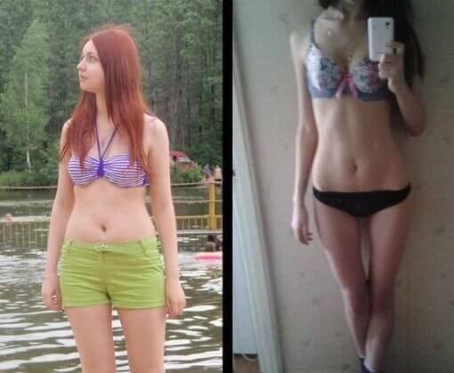

Come sono DIMAGRITA 36 kg in 6 mesi
Pubblicato 2019| Autore: Giulia
Il mio processo di dimagrimento ha impegnato circa tre settimane. Ma prima di tutto ho cercato in Internet in diversi gruppi tipo “40 kg”, dove ho letto come sono dimagrite diverse persone, grazie a cosa, e ho visto i risultati e le foto. Non mi crederete, ma dopo 3 ore davanti al pc ho mangiato due scatole dei miei cioccolatini preferiti e ho bevuto una tazza di té e una di caffè senza accorgermene. Ma non ho trovato un metodo funzionante per dimagrire velocemente e senza dieta. Una ragazza è dimagrita su grano saraceno, l'altra con le mele, qualcuno si è chiuso in palestra e ha perso 5 kg in 6 mesi. Io voglio perdere 10 -12 kg in massimo due mesi.
E così, 1 giugno : Peso 83 kg, altezza 175 cm
Ho deciso di mangiare il pollo e il grano saraceno per una settimana. Ho letto che questo abbinamento favorisce il calo di peso. In realità sono riuscita a soffrire di questo cibo solo due giorni. Che schifo! Distrugge i nervi, sensa spezie non ha ne sapore ne gusto. Morivo da fame quando guardavo le vetrine di negozi con diversi tipi di cibo gustoso, diversificato e ammaliante... Ho capito che non avrei resistito una settimana a grano saraceno e pollo, e ho continuato a cercare.
3 giugno:
Bisogna fare qualcosa!!! Sono ingrassata di altri due chili, ero molto nervosa. E per questo mangiavo ancora di più, e certo che non grano saraceno. Ho deciso di provare con le mele, il riso e le uova. A colazione il riso dolce e una banana, a pranzo mi sono sforzata a mangiare l’insalata con un uovo. Due uova al massimo. A mangiarne più di due non riuscivo.
6 giugno:
Dopo 3 giorni di questo alimentazione la pelle ha iniziato a seccarsi, i capelli erano sempre
unti. Di umore neanche ne parlo, in bocca è comparso un continuo gusto amaro. Ho anche letto, che nelle uova
sode c’è un alto tasso di colesterolo, che fa molto male all’organismo! Come posso mangiarne così tante
allora?
8 giugno:
questo non me lo sarei mai aspettata. Una mia amica mi ha invitato al matrimonio! E il matrimonio è fra un mese! Beh, ora peso già 85 кg, mi sento male, non servo a nessuno e sono una vera cicciona! Bisogno fare qualcosa IMMEDIATAMENTE!!!Ho cercato su Internet nei gruppi di persone che avevano dimagrito e tutto mi ha portato ad un solo risultato: le diete non sono per me. Tutti scrivono le stesse cose. Lo sport, diete etc. Io voglio perdere almeno 12 kg in un mese, ma lavoro dalle 8 alle 21, quindi andare in palestra non è la mia soluzione del problema. Volevo arrendermi e rifiutare l’invito, ma quando la mia amica mi ha invitato di persona mi sono trovata in un vicolo cieco. Ho cominciato a piangere e le ho raccontato come mi sentivo.
Mi sono accorta che Anna è dimagrita molto, prima era grassottella e ora porta addirittura la 44! Sapendo del mio problema Anna ha deciso di raccontarmi la sua storia. Lei è riuscita a dimagrire usando , che gli è stato regalato da madre. Certo che avevo dubbi sull’efficacia di questo prodotto, ricordando l’esperienza che aveva avuto la mia amica un anno fa, ma ho deciso di rischiare! Anna si sposa il 2 agosto e io ho solo 3 settimane per riuscire ad entrare in un abito di taglia 44. Lo stesso giorno ho trovato su Internet un sito dove si può ordinare senza problemi, la ricetta non serve. L’ho ordinato su questo sito.
12 giugno:
Il pacco con mi è arrivato via posta stamattina. In una piccola scatola era
presente il foglietto illustrativo. Questo prodotto è naturale, sicuro, senza effetti collaterali e si
vende senza ricetta. A dire il vero me ne fregavo poco, volevo dimagrire ad ogni costo. E così ho inizito
la terapia anche io!
Secondo la descrizione, stimola il lavoro degli ormoni, che sono
responsabili per la distribuzione del grasso, tutto il resto lo fa il nostro organismo da solo.
Elimina il grasso in eccesso, attiva i processi di assimilazione e il processo di dimagrimento stesso.
Vediamo il risultato!
17 giugno:
Indovino un po’? Pensateci voi, dopo cinque giorni -3,5 kg! Ma com’è possibile?! Durante questi giorni ho mangiato come sempre, beh, a dire il vero un po’ meno perchè l’appetito è diminuito. E anche quando la sera guardo il mio serial preferito faccio la ginnastica, ma non ogni volta.
25 giugno:
- 6 kg! Quasi 10 kg! Tutti dicono che sono dimagritа molto. Anzichè una ciccina, ora finalmente inizio a sentirmi una bella ragazza! Mi sembra che la mia salute sia migliorata: dormo meglio, non ho più questi sbalzi d’umore fastidiosi, sono piena di energie e di emozioni positive.
2 luglio: peso 68 кg, 175 cm
Festeggerò questo giorno come fosse il mio anniversario:))) meno di 15 кg — è perfino molto più di quello che sognavo! Non posso descrivere a parole le mie emozioni, e non posso staccarmi dallo specchio - finalmente mi piaccio un sacco:)))
24 luglio:
Ho smesso di bere già 3 settimane fa. Il peso non aumenta e l’appetito è rimasto abbastanza controllato. Vi lascio qui il link per il prodotto per non perdere. Forse un giorno dimagrirò fino al 42 non esistono i limiti dalla perfezione dell'ideale!




Bloggers online


E altre 279 senza immagine del profilo...